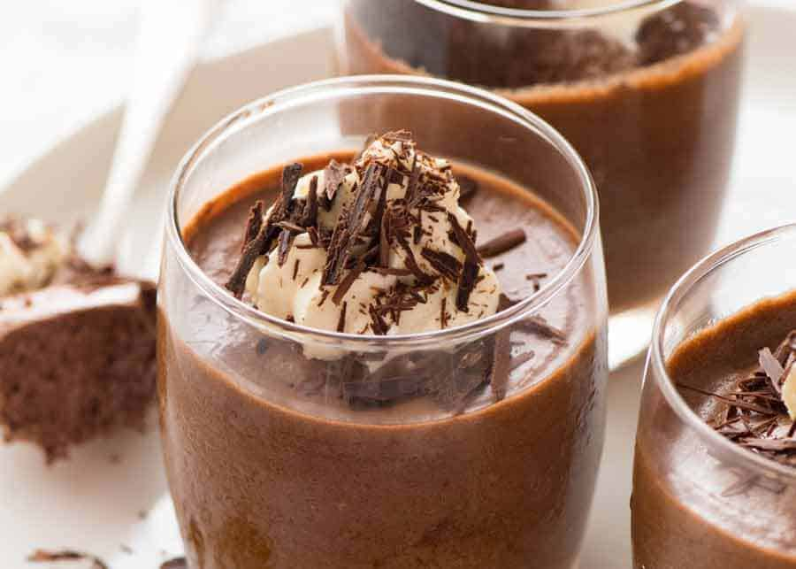

Chocolate Mousse

Description
Chocolate Mousse may well be the ultimate chocolate fix! Rich and creamy, yet light and fluffy,
one pot is satisfying but always leaves me wanting more...
This is a classic chocolate mousse made the proper French way, as served in fine dining restaurants.
Less cream, more chocolate, a more intense chocolate flavour and a beautiful creamy mouth feel.
Ingredients
- 3 eggs (~55g/2 oz each)
- 125g / 4.5 oz dark chocolate
- 10g / 0.3 oz unsalted butter
- 1/2 cup cream , full fat
- 3 tbsp caster sugar
Steps
- Separate eggs and yolks while eggs are cold. Place whites in a large bowl and yolks in a small bowl. Leave
whites while you prepare other ingredients.
- Whisk yolks.
- Place chocolate and butter in a bowl. Melt in the microwave in 30 second bursts, stirring in between, until
smooth. Set aside to cool - proceed with other steps.
- Beat cream until stiff peaks form.
- Add sugar. Beat whites until firm peaks form.
Back to homepage